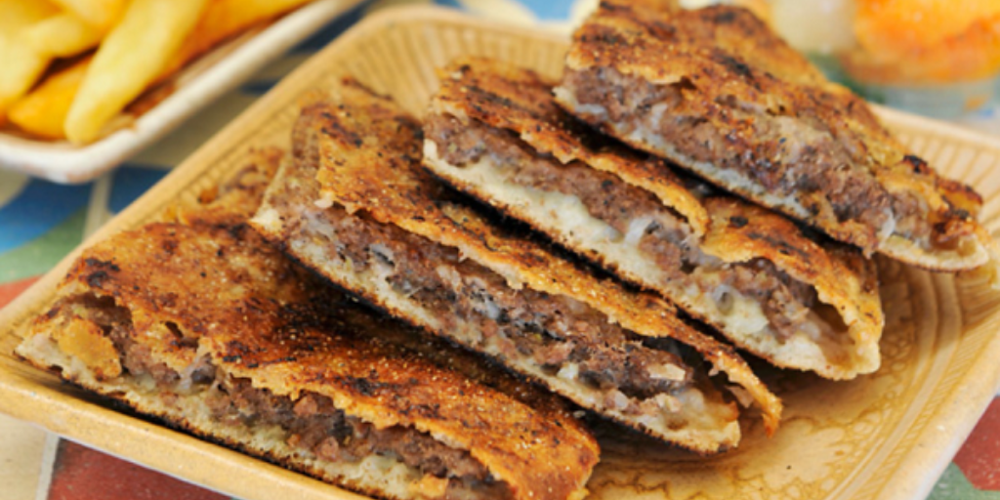

Hawawshi Recipe

Hawawshi is a traditional Egyptian dish
It is a pita stuffed with minced meat and spiced with onions, pepper, parsley, and occasionally chilies.
In most of Egypt, it is baked by filling the flat Egyptian bread with the meat mix and then baking it in the oven. In
Alexandria, the ingredients are placed between two circular layers of dough, then baked in an oven
Ingredients
- minced meat
- onions
- pepper
- parsley
Steps
- Preheat the oven to 325 degrees F (165 degrees C)
- Heat a large skillet over medium-high heat.
- Mix beef, tomatoes, onion, bell pepper, paprika, coriander, cinnamon, nutmeg, salt, and pepper together in a large bowl.
Stuff mixture inside of pita bread rounds.
- Brush tops with corn oil and wrap each in aluminum foil. Place on a baking sheet.
- Bake in the preheated oven until toasted and vegetables are softened, about 30 minutes.